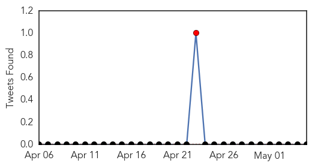
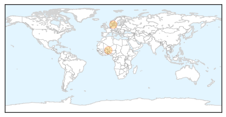
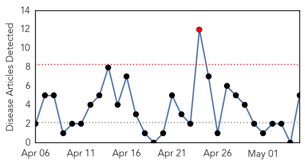
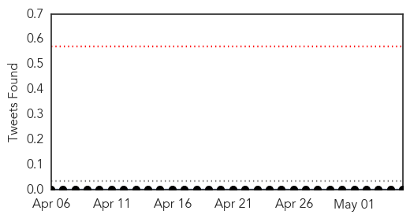
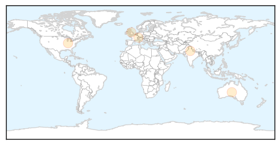
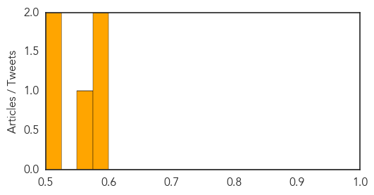

Meningitis
30-Day Web Trend
2 alerts, 0 warnings

30-Day Twitter Trend
1 alerts, 0 warnings

Article Locations
Article Confidences

Top Articles:
Top Tweets:
-
No tweets found for May 05, 2015
Hepatitis
30-Day Web Trend
1 alerts, 0 warnings

30-Day Twitter Trend
0 alerts, 0 warnings

Article Locations
Article Confidences
Top Articles:
- 0.595
- One of 'Worst Documented Outbreaks of HIV' Hits Indiana County
- 0.579
- Gilead: Stop Blocking Access to Hepatitis C Treatment
- 0.565
- Interferon-free therapy clears hepatitis C in 93 percent of patients in trial
- 0.517
- New £1m Government plan to reduce cases of 'almost entirely preventable' liver disease
- 0.506
- AbbVie : Announces Pivotal Phase 3 Data Evaluating Efficacy and Safety of HUMIRA® (adalimumab) in Patients with Non-Infectious Intermediate, Posterior, or Panuveitis
Top Tweets:
-
No tweets found for May 05, 2015